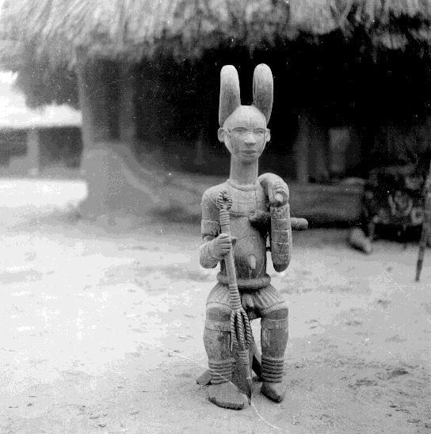

Odinani is a traditional religious belief
once entirely held by the Igbo people of Southern Nigeria.
Unfortunately, only few practice this belief system and most of what
is left of it is syncretised with Christianity.
When looking deeper into what is left of Odinani, one can see that
the Sun was and still is central to this religion. Just like in most
traditional African religions, there is a chief and supreme god that
is beyond time and space, gender less and is the source that drives
all. The universal life force. The Sun as always been a symbol of
this.
In Odinani, the supreme god is called
Chukwu (Chi Ukwu) or Chineke. These names mean "The Great Chi" and
"The God that creates." The Igbo also see the Sun as an agent of
Chukwu-- the Sun as the physical manifestation of the life force.
Chi, in Igbo Cosmology, is the soul, the spirit double, and one's
personal god. The Igbo correspond
the Sun with their own chi and it is held that chi may be invoked
and called upon by facing the Sun at daybreak. There is no surprise
that chi also means daylight in Igbo dialect. They knew of the life
force's connection with the Sun. The soul is made of light and its
energies are identical to solar particles when empowered and
perfected.
In addition to building shrines in honor of their solar worship, the
Igbo kept a physical representation of their personalized divine
self. This is called Ikenga. It is
one of the Igbo's most powerful icons. It is a horned figure that
stands for personal power, achievement and success. It also is said
to become activated through prayer (meditation) and sacrifice.
*The horns symbolize the Mercury which is
the perfected life force, the witch power and spiritual power. Many
pagan gods are depicted with such.*

In Odinani there are lesser divinities called Alusi, similar to the
Orisha and Loa, that are seen as elements and channels to the
supreme being.
One Alusi, or force of nature, is the goddess known as Ani. Her name
is in Odinani and it means "Located deep in the Earth".
Ani is known to the Igbo to be the divine
feminine goddess that rules earth and the underworld- the deep dark
waters. She also rules over creativity, morality and fertility. The
underworld is interpreted as the cosmic foot that heaven rests upon.
Heaven is the crown chakra represented by the sky god, Igwe.
This is the kundalini shakti energy
residing at the base of the spine. The python (Eke) is the sacred
earthly representation of Ani and is referred to as "Mother" by the
Igbos, still. Eke also means creative feminine force of fertility
and so there is a link.
The serpent, python and cobra have been worshiped for thousands of
years by ancient pagan traditions all over the world. It was our
cosmic symbol of spiritual power and perfection.
Hail Satan!
Sources:
The KPIM of Social order, Patrick E. Iroegbu
African Philosophy, Emmanuel Eze,
Ant Hills of the Savannah, Chinua Achebe
Nri warriors of peace, Anuobi Chikodi
Back to Black Spirituality
Home Page
Copyright 2019
Blacks for Satan; All rights reserved.